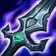
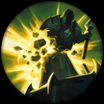
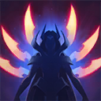

起手裝備
 長劍
長劍
被動攻速提高但附傷與一技回血下修，一技物攻係數提高；先確保殘血兵可刷新，再交位移，純坦配置更難靠基礎傷害撐輸出。
維持 A。兵線位移與標記刷新可創造連續近身；沒有可刷新目標時追擊能力下降，不能依靠純坦裝維持傷害。 完整可用；優勢與限制相抵，需要合理陣容及正常發育。
殞落王者之劍 → 破船戰斧：前者提供普攻處理前排與續戰，後者補接續主要作戰需求。保留五件成裝與獨立鞋線；核心未成形時不把最後一格的保命／穿透能力當成已有。
征服者：以獨立技能與普攻累積長戰收益；短打一輪就撤退時通常無法吃滿。其餘選用爆破、回春、堅毅、背水一戰，依本頁輸出方式與生存需求配套。
閃現＋光盾。閃現優先保留應對致命控制或完成有隊友跟進的擊殺；第二技能依對線用途使用，不替代走位。
本站獨立邏輯複核：以既有手機版技能／裝備／符文資料與已整理的7.3f官方差異推演；本輪不採用外站評級、勝率或推薦配置。 完成策略與配置一致性複核，不等於全部技能逐級數值、傷害計算及所有特殊互動已實測；既有缺證項目仍保留。
攻速（依等級）：3%–17% → 11%–25%
傷害（依等級）：25–150 + 30%額外物攻 → 10–80 + 20%額外物攻
物攻係數：65% → 80%
治療量：11%/14%/17%/20%物攻 → 9%/11%/13%/15%物攻
殞落王者之劍 → 破船戰斧：前者提供普攻處理前排與續戰，後者補接續主要作戰需求。保留五件成裝與獨立鞋線；核心未成形時不把最後一格的保命／穿透能力當成已有。



五件成裝與鞋子分開列示；起手與核心是購買路線，不是額外佔用的成裝欄位。鞋子完成時機仍依對線壓力與回城金錢調整。




征服者：以獨立技能與普攻累積長戰收益；短打一輪就撤退時通常無法吃滿。其餘選用爆破、回春、堅毅、背水一戰，依本頁輸出方式與生存需求配套。


閃現＋光盾。閃現優先保留應對致命控制或完成有隊友跟進的擊殺；第二技能依對線用途使用，不替代走位。
加點優先：Q > W > E
優先 Q > W > E，以利刃衝擊承擔主要循環；初級取點仍依15級表保留完整基本技能，不把主升順序誤認成開局必須連點同一招。

技能命中敵人會疊加攻速；滿層後普攻造成額外魔法傷害。
有後續版本調整的項目以較新數值為準；未列出者不代表完整技能成長表。
突進到敵人身上造成物理傷害；擊殺目標或命中被標記敵人時刷新冷卻。
有後續版本調整的項目以較新數值為準；未列出者不代表完整技能成長表。
蓄力時降低承受的傷害且蓄力不會被打斷；放開後向前斬擊，蓄力越久傷害越高。不要把減傷誤限為只有物理傷害。
先後放置兩片劍刃，劍刃交會時傷害、暈眩並標記命中的敵人。
射出大量劍刃傷害並標記英雄，落地後形成劍陣，穿越的敵人會被緩速。
兵線位移與標記刷新可創造連續近身；沒有可刷新目標時追擊能力下降，不能依靠純坦裝維持傷害。
3技暈眩 → 1技突進 → 普攻 → 2技 → 重置1技
三技命中後利用標記重置一技，穿插普攻並保留第二次突進追擊或撤退。
4技 → 1技 → 3技 → 重置1技 → 普攻
大絕命中多人後逐一利用標記重置，先確保被動層數再貼近核心輸出。
1技小兵 → 一段3技 → 4技 → 二段3技 → 1技英雄
先借小兵縮短距離並隱藏三技角度，再以大絕與暈眩製造多次重置。
前期先用殘血兵墊位移與被動層數，沒有層數時不要硬拚。
殞落王者之劍 → 破船戰斧 → 三相之力為主要成裝順序。殞落之後提前破船戰斧，再接三相；死亡之舞與守護天使保留，避免後段只有輸出缺容錯。
後期進場前先確認敵方硬控，大絕命中多人後再利用標記連續 Q。
兵線位移與標記刷新可創造連續近身；沒有可刷新目標時追擊能力下降，不能依靠純坦裝維持傷害。 名單僅作機制對位提示；優先看控制是否交掉、兵線／地形與隊友跟進，不宣稱勝率剋制榜。
對局名單是機制與分路判斷，不代表固定勝率；需同時看雙方熟練度、兵線與陣容。
墨菲特、賈克斯、蓋倫的減速／防普攻／沉默都會破壞進場鏈，沒有被動層數不硬上。
殞落之後提前破船戰斧，再接三相；死亡之舞與守護天使保留，避免後段只有輸出缺容錯。
威脅名單參考同分路指南；較有利名單仍是機制推論，需連同兵線、打野與玩家熟練度判斷，並非台服勝率排名。
以下情境替換以本頁7.3b五件成裝為基準。同一格多項建議擇一；鞋子由二級升三級，主動裝另占成裝格。
高
觸發：敵方前排物防／魔防成形，或近身普攻威脅明顯。
守護天使 → 黑色切割者
面對坦克／普攻威脅時，將守護天使換成黑色切割者；先保留前三件核心，若替換核心位須確認目前死亡或輸出不足的原因。
面對坦克／普攻威脅時，將守護天使換成黑色切割者；先保留前三件核心，若替換核心位須確認目前死亡或輸出不足的原因。
高
觸發：主要死亡原因是一輪集火，無法完成輸出或控制。
目前配置已提供部分爆發／暴擊多所需功能；先按威脅調整購買順序，不為分類名稱強行多買一件。
高
觸發：敵方法術先手或持續魔法傷害成為主要威脅。
守護天使 → 魔提斯深淵
面對魔法傷害多時，將守護天使換成魔提斯深淵；先保留前三件核心，若替換核心位須確認目前死亡或輸出不足的原因。
面對魔法傷害多時，將守護天使換成魔提斯深淵；先保留前三件核心，若替換核心位須確認目前死亡或輸出不足的原因。
高
觸發：魔法傷害與控制鏈影響生存或輸出。
貪婪護脛 → 水星之靴
魔法傷害及可縮短的控制占主導時，整條改水星之靴→鎖鏈軍靴；韌性不能縮短擊飛。
魔法傷害及可縮短的控制占主導時，整條改水星之靴→鎖鏈軍靴；韌性不能縮短擊飛。
韌性不能縮短所有控制，例如擊飛；護盾與解控各有適用條件。
高
觸發：敵人持續回復令集火失敗。
守護天使 → 生化龐克鏈鋸之劍
面對治療／吸血多時，將守護天使換成生化龐克鏈鋸之劍；先保留前三件核心，若替換核心位須確認目前死亡或輸出不足的原因。
面對治療／吸血多時，將守護天使換成生化龐克鏈鋸之劍；先保留前三件核心，若替換核心位須確認目前死亡或輸出不足的原因。
7.3f差異核對：本頁已核對本版官方變動與配置引用；本輪逐份獨立評估Tier與配置，不採外站排行；賽勒斯為保守暫定。未核實的完整成長數值保留註記。查看校正範圍。
本頁校正版本：7.3f；校正日期：2026-11-13。
參考來源標示版本：7.3f（官方差異與既有遊戲資料）
完成策略與配置一致性複核，不等於全部技能逐級數值、傷害計算及所有特殊互動已實測；既有缺證項目仍保留。
評級理由：維持 A。兵線位移與標記刷新可創造連續近身；沒有可刷新目標時追擊能力下降，不能依靠純坦裝維持傷害。 完整可用；優勢與限制相抵，需要合理陣容及正常發育。
維持 A。兵線位移與標記刷新可創造連續近身；沒有可刷新目標時追擊能力下降，不能依靠純坦裝維持傷害。 完整可用；優勢與限制相抵，需要合理陣容及正常發育。
歷史資料有後續調整時，以較新版本數值為準。
| 項目 | 調整前 | 調整後 |
|---|---|---|
| 基礎生命 | 690 | 660 |
| 每級生命成長 | 128 | 138 |